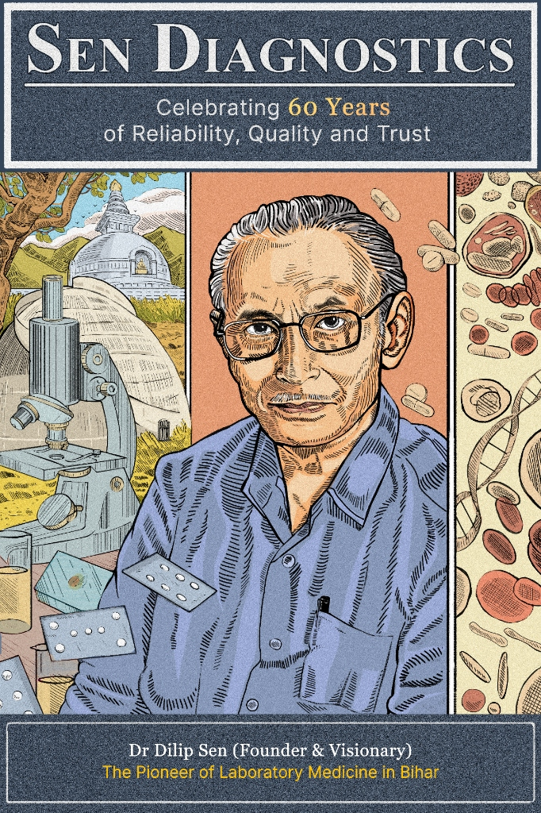
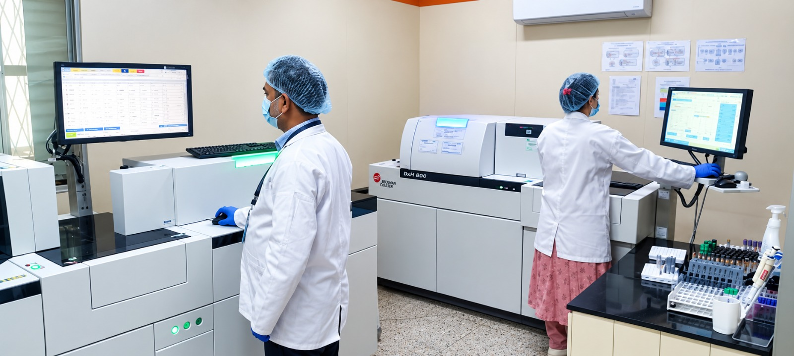
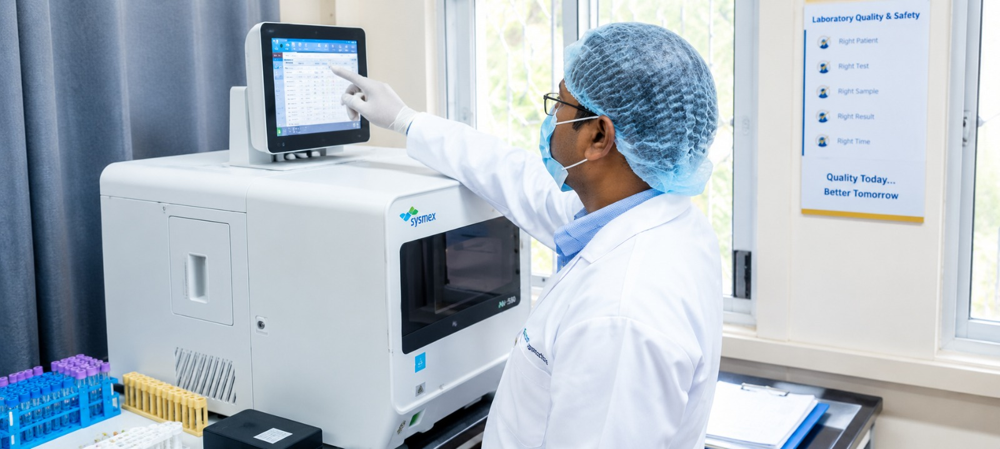
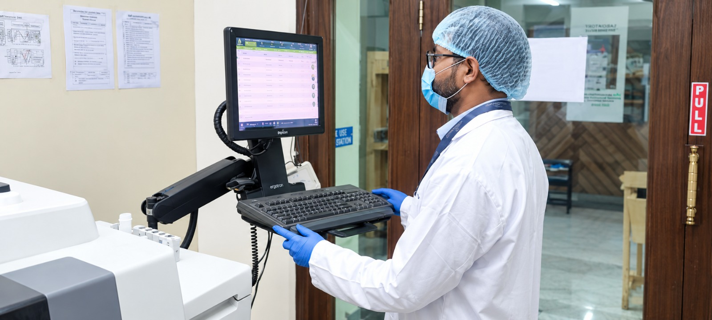
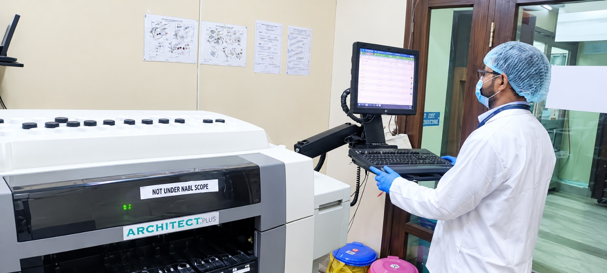
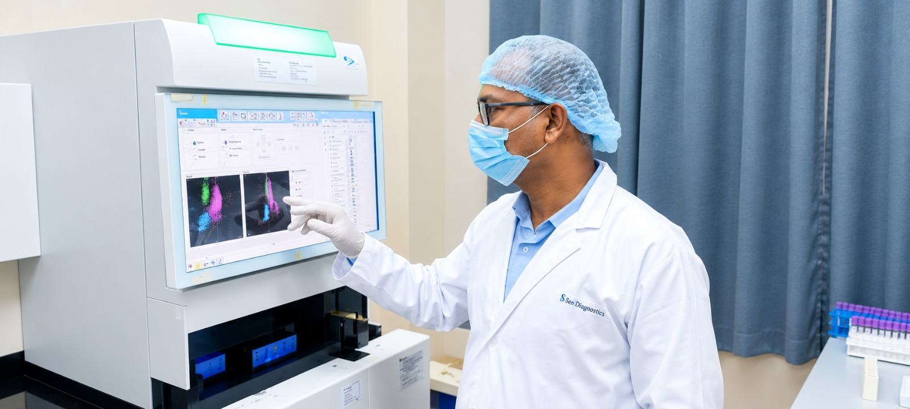
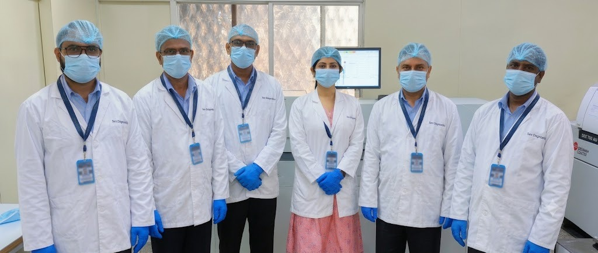
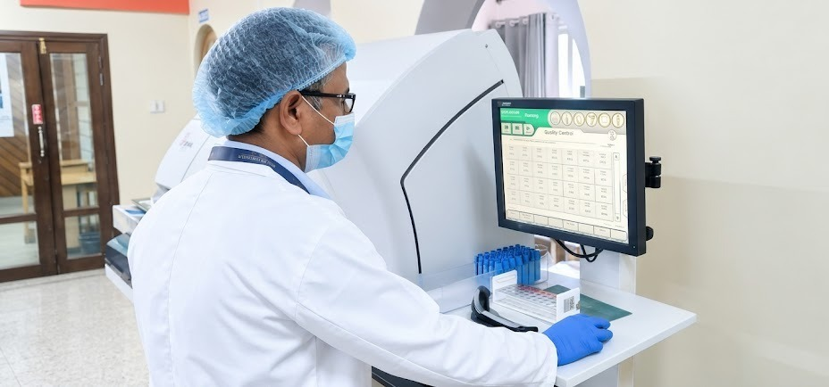

Three generations of medical leadership, dedicated pathologists, and state-of-the-art diagnostic automation serving Bihar since 1965.
From our central laboratory and network of service points across the region, Sen Diagnostics provides a comprehensive range of diagnostic services, with testing performed at our central facility. Since 1965, the laboratory has evolved across three generations, integrating advances in laboratory medicine, automation and diagnostic technology while maintaining a continued focus on quality systems, medical oversight and dependable laboratory services.
Founded by Dr. Dilip Sen in 1965, our laboratory began in a modest 8x8 room and evolved over three generations into Sen Diagnostics Private Limited. Throughout this journey, the laboratory has continued to adopt advances in laboratory medicine and diagnostic technology. Its milestones include the establishment of Bihar's first privately licensed blood bank in 1969 and the introduction of several laboratory technologies to the region over the decades.
Founded in a modest 8x8 room in 1965 • Celebrating 60 Years of Reliability, Quality and Trust.

Tap photo to lift & expand portrait
In a modest 8x8 room in 1965, Dr. Dilip Sen established Senslab, which later became Sen Diagnostics Private Limited. His approach combined medical oversight, quality-focused laboratory practices and the adoption of emerging diagnostic technologies.
Among the laboratory's early milestones was the establishment of Bihar's first privately licensed blood bank in 1969. Dr. Sen graduated in MBBS from Prince of Wales Medical College in 1952. Beyond medicine, he was also an accomplished photographer and a motorsports enthusiast.
Click on any photo to view in high definition. Every image reflects our 60-year commitment to clinical accuracy and compassionate care.

Three generations of clinical leadership guiding diagnostic protocols.

Detailed microscope and clinical reporting by senior consultants.
Pioneer of laboratory medicine in Bihar. MBBS 1952, established Bihar's 1st private blood bank in 1969.

High-speed automated analyzers eliminating human error in test execution.

AIIMS New Delhi registered EQAP hematology controls for precision blood tests.

Highly skilled technologists dedicated to meticulous calibration and specimen care.

From Dr. Dilip Sen to present day: unbroken commitment to Bihar's healthcare.

Budh Marg facility equipped with molecular, biochemistry, and microbiology labs.
Commenced in an 8x8 room with manual microscopic techniques and medical oversight.
Pioneered the region's first privately licensed blood bank to provide safe transfusions.
Incorporated as Sen Diagnostics Pvt Ltd, introducing computerized analyzers to Bihar.
NABL Accredited (MC-6584) central facility with automated phlebotomy and digital delivery.